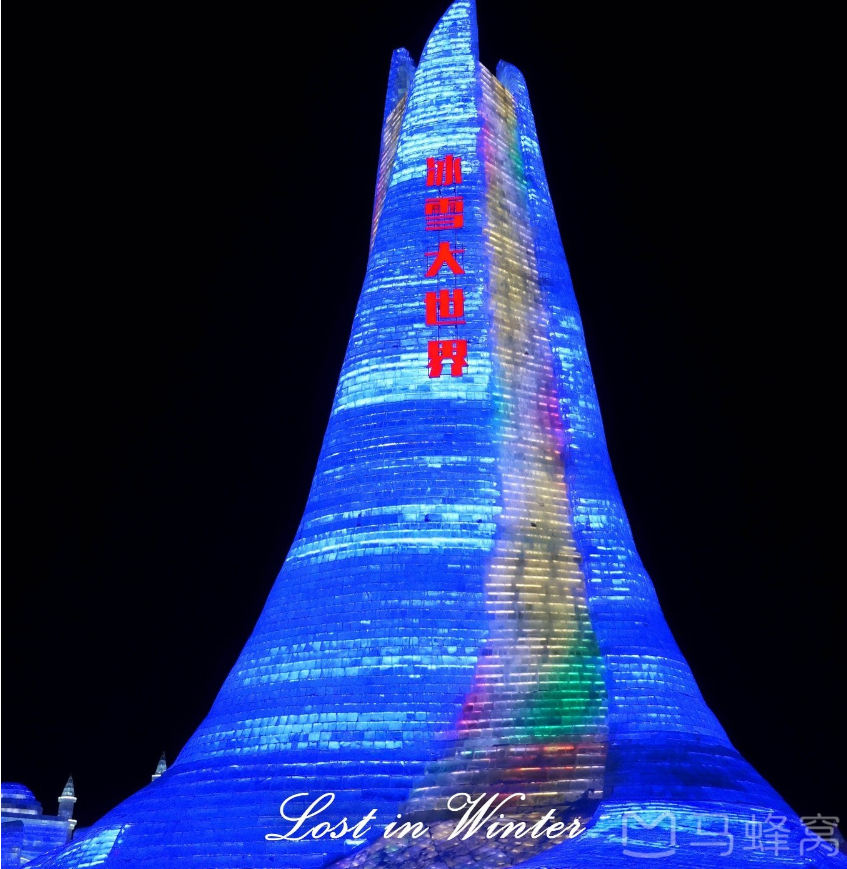
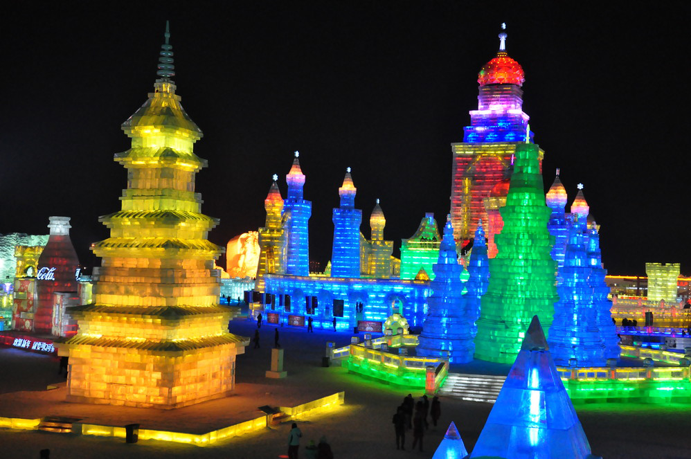
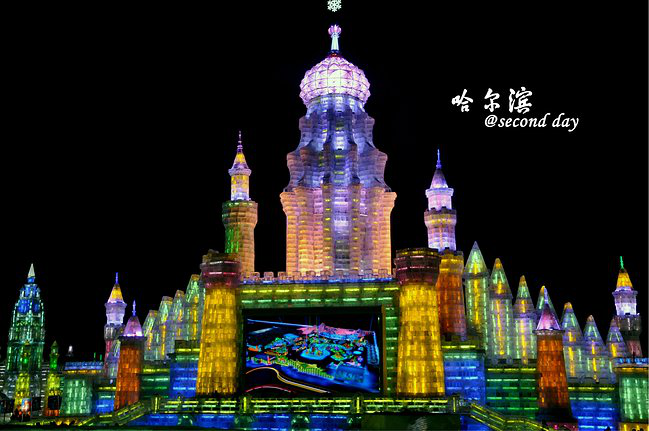
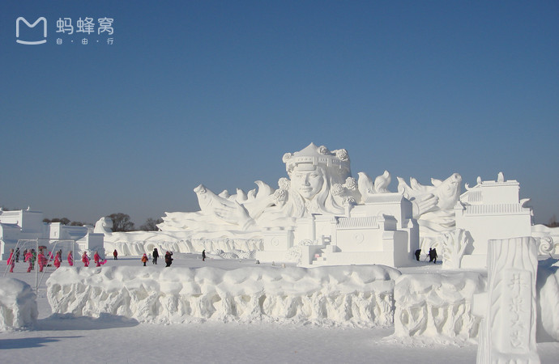
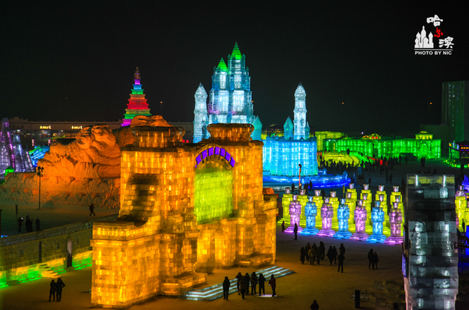
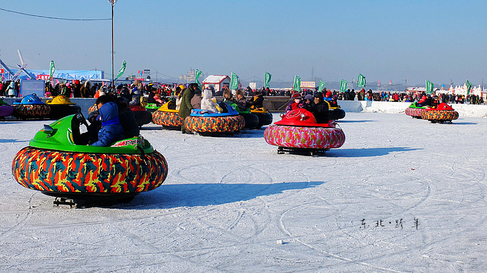
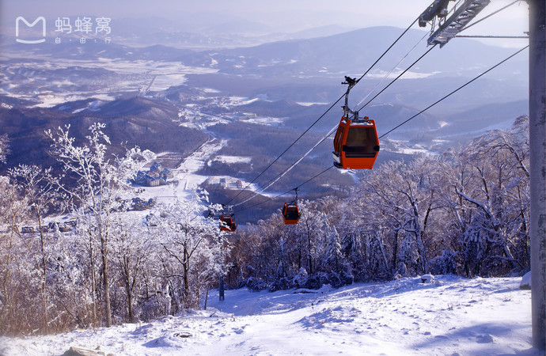

哈尔滨冰雪大世界始创于1999年，向世人展示了北方名城哈尔滨冰雪文化和冰雪旅游的独特魅力。当今世界规模最大、冰雪艺术景观最多、冰雪娱乐项目最全、夜晚景色最美、活动最精彩的“冰雪迪斯尼乐园”。
每年都有数以百万计的游客前来参观
第十四届冰雪大世界设有大型冰雪景观展示、冰雪活动、实景演出、花车巡游、歌舞表演、互动游戏、焰火燃放、现代3维立体灯光演示、旅游购物、特色餐饮等一系列室内外活动有机地组合在一起，通过完善园区各项功能，合理规划项目，建设一座综合性的冰雪游乐园。
冰雕艺术是哈尔滨最具特色的明信片之一，工匠师傅将取自松花江上数万吨的冰块雕刻的栩栩如生
冰雪大世界每年的冰雕都是不同的，所以每次去都是可以观赏到不同的冰雕，看冰雪艺术非北国哈尔滨莫属！来体验一场冰雪盛宴吧！
松花江上的夕阳与微笑
 没游览过松花江的哈尔滨之旅是不完整的。夏日傍晚沿着江堤散步似乎成了许多哈尔滨人的一种习惯。有条件也可以换个角度欣赏——坐索道俯瞰，或乘游船近距离接触松花江。等冬天江面完全封冻的时候，这里又成了欢乐的海洋，各种冰上活动荟萃一堂。南方的孩子一定要好好在江面上走一回，才不枉来一趟真正的北方.
返回→